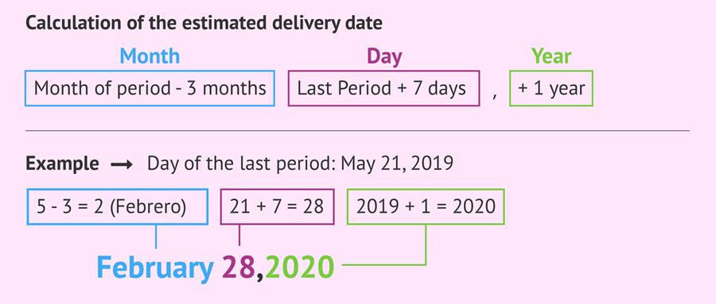

Antenatal Screening Guideline
1. Overview of Antenatal Counseling
The lecturer stresses: history taking + physical examination ALWAYS come first before giving any list of investigations.
2.1 First Antenatal Visit Timing
- Ideally: Before 10 weeks gestation.
- Common timeline:
- 4 weeks: missed period → home pregnancy test
- 5–7 weeks: patient visits GP (measure BMI)
- In OSCEs: if they say UPT positive, treat it as pregnancy.
- UPT positive → assume pregnant.
- If UPT negative → reliably negative.
- Optional: confirm via clinic UPT or serum hCG.
2.2 Establishing Gestational Age
- Ask for LMP → used to calculate:
- Estimated Due Date (EDD)
- Gestational Age (GA)

- If LMP unknown or unreliable → Dating Scan.
- irregular periods / PCOS → Dating Scan.
- Dating scan tells you gestational age based on sac/CRL.
- Dating scan is not routine unless GA is uncertain.
3. Antenatal History Taking – Detailed Structure
3.1 Current Pregnancy
- Confirm pregnancy intention:
- Is it planned?
- RACGP emphasizes: Assess if she wants to continue or terminate the pregnancy.
- Communication approach:
- Do not assume congratulations.
- If unplanned → ask: “Are you happy to proceed with the pregnancy?”
- If yes → congratulate and create a positive environment.
Key points to capture:
- Symptoms so far
- LMP
- Period regularity
- Dating scan need
3.2 Past Obstetric History (Critical – MUST not miss)
Explore every previous pregnancy in detail:
- Number of pregnancies
- Complications:
- GDM
- Preeclampsia
- Birth defects (e.g., NTD → requires high-dose folate)
- Mode of delivery:
- C-sections
- Vaginal birth
- Any delivery complications
- Postnatal issues
Previous pregnancy outcomes directly influence management of this pregnancy.
3.3 Medical History
Why important?
- Pregnancy affects medical conditions.
- Medications used for these conditions need review for safety.
Ask for:
- Diabetes
- Hypothyroidism
- Heart disease
- Epilepsy (on anticonvulsants)
- Psychiatric conditions (e.g., lithium use)
- Any chronic illness requiring dose adjustment
Also ask:
- Current medications
- Supplements
- Allergies
3.4 Family History
- Medical conditions (e.g., diabetes)
- Genetic conditions (important)
- Down syndrome risk in family
- Thalassemia history → may need genetic counselling
- Helps determine need for pre-pregnancy genetic counselling (e.g., thalassemia carrier couples)
3.5 Lifestyle Assessment
Essential because fetus shares the mother’s environment.
Assess:
- Smoking
- Alcohol
- Drugs
- Diet:
- Nutrition adequacy
- Vegan/vegetarian → risk of iron deficiency
- Exercise levels
3.6 Psychosocial Assessment (Often Missed in Exams)
Key areas:
- Support systems
- Mental health (depression, anxiety)
- Domestic violence (DV):
- Pregnancy worsens pre-existing DV.
- MUST screen sensitively.
- Sexual history:
- Important for STI risk assessment.
- High-risk if:
- Previous STIs
- Sex worker
- Multiple partners
- If high-risk → need to test for Chlamydia/Gonorrhea.
3.7 Hyperglycemia/GDM Risk Factors
Taken from medical + obstetric history:
- Obesity (BMI from physical exam)
- Family history of diabetes
- Previous GDM
- Previous macrosomic baby (“large baby”)
These influence:
- Earlier diabetes screening
3.8 Nutritional Deficiency Risk
- Assessed via diet history:
- Vegans/vegetarians → low iron/B12 risk
3.9 Physical Examination (Mentioned briefly)
- BMI at beginning of pregnancy:
- Height + weight → calculated and recorded in software
- Used for risk assessment & screening decisions
4. Lecturer’s Summary Structure (The “Boxes”)
The lecturer condenses antenatal history into simple, essential boxes:
Box 1 – Current Pregnancy
- LMP
- Gestational age
- Dating scan if needed
- Planned or unplanned
- Pregnancy intention (continue vs terminate)
Box 2 – Previous Pregnancies
- Obstetric history
- Complications
- Mode of delivery
- Neonatal issues
Box 3 – Medical Conditions & Medications
- Chronic illnesses
- Medications needing adjustment
- Family medical/genetic conditions
Box 4 – Psychosocial
- Support
- Mental health
- Domestic violence
- Sexual history (STI risk)
Box 5 – Lifestyle
- Smoking
- Alcohol
- Drugs
- Diet
- Exercise
Comprehensive Physical Examination in Antenatal Screening
Introduction
- The antenatal physical exam is tricky and requires clarity about which examinations are routine and which are indicated only in specific situations.
- A key conceptual question: Do you perform a pelvic exam during routine antenatal screening?
→ Answer: No, unless the patient is due for cervical screening.
1. Pelvic Examination in Antenatal Care
Do you routinely do a pelvic exam / speculum exam in antenatal visits?
- Routine pelvic exam: NO
- Not indicated in a normal pregnancy without symptoms.
- Do not ask patient to lie down for a speculum exam by default.
Is there any situation when a pelvic exam is done?
YES — one scenario only:
- When the patient is due for her cervical screening test.
- This is the only reason to perform a pelvic/speculum exam in a normal, asymptomatic pregnancy.
- Cervical screening is safe during the first trimester.
Technique Details (High-Yield)
- Use the broom for cervical screening.
- Avoid brushes or CytoBrush, especially those with brush tips.
- The broom is safe in early pregnancy.
When not to do a pelvic examination
- No vaginal bleeding
- No leaking of fluid
- No discharge
- No symptoms
- No obstetric concerns
→ Do NOT do a pelvic exam unless cervical screening is due.
2. Key Components of the Examination
A. Baseline BMI
- Must obtain a baseline BMI at the first visit.
- Rationale:
- To monitor weight gain throughout pregnancy.
- If weight gain is excessive, compare with initial BMI as it may indicate:
- Possible complications
- Abnormal gestational weight progression.
B. Baseline Blood Pressure
- Essential due to high prevalence of hypertensive disorders in pregnancy.
- BP baseline helps:
- Detect early pre-eclampsia risk
- Compare BP trends in subsequent visits
High-Yield: Hypertensive conditions are a major concern in antenatal care → Baseline BP is mandatory.
C. Cardiovascular Examination
- Pregnancy places significant stress on the cardiovascular system:
- ↑ Cardiac output
- ↑ Blood volume
- ↑ Heart workload
- Therefore, a heart exam is essential.
- Identify:
- Pre-existing valvular disease
- Heart failure
- Undiagnosed structural disease
→ These can worsen due to physiological changes in pregnancy.
D. Breast Examination
Not routine — but done when indicated.
Indications for Breast Exam in Pregnancy
- History of breast lump
- Patient reports: “Doc, I have a breast lump we’re monitoring.”
- Hormonal changes in pregnancy can affect lumps → examine early.
- History of mastectomy or breast cancer
- Evaluate current breast status.
- Important for planning breastfeeding postpartum.
- Perform breast exam only when relevant or indicated.
- Do not routinely examine breasts unless there is a clinical reason.
E. Pelvic Examination — Repeated Clarification
- Only done for cervical screening if due.
- Otherwise, not part of routine antenatal physical exam.
F. Other Routine Components
(Referenced to the ECG checklist in the lecture)
Height & Weight
- Required to calculate BMI (as above).
Blood Pressure
- Baseline as well as ongoing monitoring.
Urine Dipstick
- Performed multiple times during pregnancy.
- Purpose: Check for proteinuria.
- Will be discussed in greater depth in the investigations section.
Psychosocial Screening / Questionnaires
- Done in practice, although not heavily emphasized in exams.
- Includes assessment of:
- Social support
- Stressors
- Domestic violence
- Emotional wellbeing
Mental State Examination (MSE)
- Required only if there is a history of mental health disorders.
- e.g., previous depression, anxiety, bipolar disorder, psychosis
- Not routinely performed.
Investigations
1. Routine Blood Tests
1.1 Full Blood Examination (FBE)
Purpose
- Primary reason: Detect anemia.
- Pregnancy increases iron requirements → iron deficiency anemia is common due to pre-existing low iron from menstruation.
- Other values of interest:
- Thalassemia indicators
- Platelet count (due to pregnancy complications that affect platelets)
1.2 Blood Group & Rh Typing
What to order
- ABO blood group
- Rh status
- Antibody screen (Indirect Coombs test)
Key notes
- Even if blood group is known, mention it in exams and typically check again in pregnancy.
- Antibody screening must be repeated at the beginning of each pregnancy, irrespective of previous results.
Why important?
- Detect Rh antibodies that can cause hemolytic disease in subsequent Rh-positive pregnancies.
2. Maternal Infection Immunity Tests
2.1 Rubella IgG
Why always done?
- Rubella causes severe congenital syndrome, especially early in pregnancy.
- Other infections like mumps do not cause comparable fetal harm → not routinely tested.
Key points
- Do in every pregnancy, even if previously IgG positive.
- If IgG negative:
- Do NOT vaccinate in pregnancy (MMR = live vaccine).
- Advise to avoid contact with sick children/rashes.
- Plan postpartum vaccination.
2.2 Varicella (Chickenpox) Serology
Exam requirement
- Mention it although approached with some selectivity in practice.
Approach
- Ask about history of chickenpox or shingles.
- If unclear or negative → do serology.
- Only one episode of chickenpox gives lifelong immunity.
3. Sexually Transmitted Infection Screening
STIs are important because:
- They are anatomically close to uterus → risk of ascending infection.
- Some transmit to fetus during delivery (HIV, Hep C).
- May cause pregnancy complications.
3.1 Universal STI Tests
Syphilis
- Test all pregnant women.
HIV
- Test all pregnant women.
- Requires counseling and consent.
Hepatitis B
- Test all pregnant women.
3.2 Hepatitis C
- RANZCOG: Test if risk factors OR consider universal screening.
- Australia (RACGP): Prefer universal testing.
- Lecturer: “I put it in my list and get it done.”
3.3 Chlamydia (± Gonorrhea)
Selective testing only
Test if high-risk (Australian guidelines):
- Age < 30 years
- Sex workers
- History of STIs
- Multiple sexual partners
- High-risk sexual behaviour
Specimen options
- First-pass urine
or - Self-collected vaginal swab
Note
- Guidelines do not routinely mention gonorrhea.
4. Urine Tests
4.1 Midstream Urine (MSU) for Microscopy, Culture, Sensitivity (MCS)
Main purpose: Detect asymptomatic bacteriuria
- A significant growth of a single organism, but:
- No burning
- No frequency
- No abdominal pain
- No fever
- Why treat in pregnancy?
- Reduces complications and prevents pyelonephritis.
- Pyelonephritis requires IV antibiotics, which is complicated in pregnancy.
Other findings
- Protein (from microscopy)
- Blood
- Glucose
Key exam point
- Asymptomatic bacteriuria → only treated in pregnancy, not routinely in men.
5. Cervical Screening
- Safe at any time in pregnancy if correct equipment is used.
- Preferably done at first trimester.
- If due soon (e.g., in 3 months) → perform now, not later.
6. Genetic / Chromosomal Screening
Down Syndrome Screening
- Not routine mandatory.
- Must be offered, not dictated.
- Provide information → woman decides.
- Two options exist (details discussed later in lecture, not here).
Important phrasing
- Say: “We can offer Down syndrome screening if you wish.”
- Do not say: “You must do this test.”
7. Thyroid Screening (TSH)
- NOT routine.
- Only done if risk factors.
Risk factors (RACGP)
- Previous thyroid dysfunction (e.g., subclinical hypothyroidism)
- Symptoms/signs of thyroid disease
- Thyroid antibody positivity
- Family history of autoimmune thyroid disease (e.g., Hashimoto's)
- Other autoimmune disease (e.g., Type 1 diabetes)
- High BMI
Why important?
- Maternal hypothyroidism in 1st trimester severely affects neurological development of fetus.
- For known hypothyroidism:
- Increase medication dose immediately
- Check TSH monthly in 1st trimester
8. Ferritin & Hemoglobin Electrophoresis
Not routine
Order only for high-risk groups:
- Vegetarians
- History of iron deficiency anemia
- FHx of thalassemia or hemoglobinopathies
9. Vitamin D
Not routine anymore
- Previously tested in women with:
- Low sunlight exposure
- Indoor work
- New guideline:
- Do NOT test routinely, regardless of maternal risk factors.
- Test only if required for other clinical indications.
COUNSELLING
1) Key opening counselling point — always tell everyone you are pregnant
Core message (verbatim emphasis): “From now on, you tell everyone you're pregnant.”
- Tell any doctor, pharmacist, dentist, radiologist, and any healthcare professional before they give medication, imaging, or other interventions.
- Rationale: protect against teratogens (e.g., certain medications, ionising imaging).
2) Lifestyle advice
- Alcohol: “No alcohol is safe in pregnancy. Not even a little bit, nothing.” (stop completely).
- Smoking: Advise to stop smoking; if cannot stop immediately, strongly encourage reduction and provide support/referral.
- Exercise:
- Encourage moderate exercise. Good to continue/maintain moderate-level aerobic and resistance/strength training and pelvic-floor exercises.
- Do not suddenly start high-intensity training (e.g., marathon training) in pregnancy unless the woman had prior experience at that level.
- For previously sedentary women, advise starting gradually at moderate intensity.
- Sex: Sexual activity is permitted in pregnancy unless there are complications (e.g., placenta previa or other obstetric contraindications) or if the couple are doing “harmful/traumatic” activities.
- Caffeine: Small amounts acceptable — lecturer: 1–2 “free” cups of coffee ok; heavy consumption (e.g., 7–8 cups/day) should be reduced.
- Domestic/family violence screening: Ask about family violence; if features are found, initiate counselling/referral (lecturer highlights screening as part of antenatal care).
3) Nutrition / Foods to avoid
- General: Recommend a well-balanced diet. Counsel obese women about higher pregnancy risks and need for specific management.
- Foods to avoid (explicit list lecturer gave):
- Uncooked / undercooked meat (e.g., rare steak) — advise fully cooked.
- Raw eggs (avoid).
- Soft cheeses (risk of listeria) — avoid unpasteurized/soft cheeses.
- Pre-prepared / pre-packed salads — avoid due to higher contamination risk.
- Certain fish — avoid high-risk fish / excessive amounts (mercury concern implied); lecturer: “be careful with fish” — not all fish are banned but avoid high-consumption and raw/undercooked seafood.
4) Supplements & medications
- Only two routine recommended supplements:
- Folic acid — required (dose and timing given below).
- Iodine — required (lecturer emphasised importance because of fetal thyroid development).
- Lecturer: other vitamins (vitamin D, iron) may be sold combined with these, but guidelines list only these two as the routine recommended supplements.
- Folic acid details (explicit):
- Routine dose: 0.4 mg (400 µg) daily. Many tablets are 0.5 mg — acceptable.
- Timing: Start 1 month before conception and continue through the first 3 months of pregnancy.
- High-dose folic acid — indications (must recall for exam):
- Pre-existing diabetes (lecturer emphasised this is frequently forgotten).
- Maternal BMI > 30.
- Personal or family history of neural tube defect (NTD).
- Use of anticonvulsant (antiepileptic) medication.
- (diabetes and BMI >30 as important/commonly forgotten high-dose indications.)
- Lecturer note: you do not need to memorise the iodine dose for the lecture — saying “iodine” is sufficient.
- Medications: Core counselling: always tell any prescriber or pharmacist you are pregnant before taking/being given medications; review all current meds for safety in pregnancy and coordinate with specialist if patient is on chronic meds (e.g., anticonvulsants, cardiac meds) — lecturer earlier emphasised this.
5) Screening tests, scans and timelines
- First trimester / 6–10 weeks: initial antenatal visit and planning of antenatal screening.
- ~10 weeks: Down syndrome screening — lecturer arranges screening around 10 weeks and tells woman to return if she wishes to proceed.
- 20 weeks: Morphology (anatomy) ultrasound scan — look at fetal anatomy, placenta location (placental position), take fetal photos; usually performed at about 20 weeks (mid-pregnancy).
- Gestational diabetes (GDM) screening: OGTT at ~26–28 weeks (end of second trimester / early third trimester).
- Important specifics (Australia, per lecturer):
- Do oral glucose tolerance test (OGTT): fasting plasma glucose, then 1-hour and 2-hour post-glucose checks (the “sweet drink test”).
- Australia does NOT use routine fasting blood glucose alone, does not use the one-hour glucose challenge test, and does not use HbA1c for routine pregnancy screening.
- Lecturer also noted some indications for earlier GDM screening exist (will be discussed elsewhere) — i.e., higher-risk women may need earlier testing.
- Important specifics (Australia, per lecturer):
- ~Around 28 weeks (and later antenatal checks):
- Repeat complete blood picture (haemoglobin) and consider ferritin (preparation for delivery and blood loss).
- Repeat blood group & antibody screen (as indicated).
- Late pregnancy: GBS (Group B Streptococcus) swab — lecturer emphasised importance:
- Why test GBS: maternal GBS can transmit during birth and cause severe neonatal sepsis.
- If GBS positive: plan intrapartum antibiotic prophylaxis during labour to protect the baby (antibiotics given to the mother in labour so antibiotics are present in baby during delivery). Lecturer stressed the antibiotic is for the baby’s protection.
6) Warning signs / when to escalate (implicit in content)
- Tell all clinicians you are pregnant — to avoid teratogenic exposures (radiology, drug prescribing).
- If GBS positive: expect intrapartum antibiotics — escalate to labour unit in labour.
- Placenta previa — a reason to avoid sexual intercourse (lecturer: complications such as placenta previa in second half of pregnancy change advice).
- In general: lecturer indicates that irregularities later in pregnancy increase visit frequency and require specialist review (no exhaustive red-flag list provided in this excerpt).
7) Antenatal visit frequency & model of care
- Typical visit frequency for an uncomplicated pregnancy: around 10 visits total (this is the usual number recommended in references for no-complication pregnancies).
- Lecturer: do not promise weekly visits—many patients expect frequent calls but routine care spaces these out. After initial screening, patient may be told “go home, enjoy your pregnancy; the clinic will call you.”
- Typical timing references used by lecturer: contact around 10 weeks, then 20 weeks (following morphology ultrasound), then 24,28,32,36,38 and 40 weeks , then increasingly frequent visits in third trimester if needed.
- Variability: Frequency increases with complications (e.g., heart disease). Model of care and geography affect access.
- Sexual activity: Advice women without complications (such as placenta previa) that sexual activity in pregnancy is safe.
- Models of care (three explained):
1. Public/team care (midwife and specialist or GP in public hospital): No complications → mainly midwife-led care; obstetrician may not routinely see patient.
2. Private care (specialist in private hospital): Patient sees private obstetrician regularly; higher cost but more OB contact.
3. Shared care: Combination of GP (with OB certificate) and hospital clinic. Useful for rural patients to reduce travel.
- Eligibility for shared care (lecturer’s inclusion criteria): low risk pregnancies only — e.g., young (<40 per lecturer), no heart/kidney/diabetes/haematologic disease, no cancer, no HIV, no prior neonatal death, no recurrent miscarriage, no multiple pregnancy, no history of pregnancy complications.
- If any risk factor present → refer to pregnancy clinic / specialist rather than shared care.
8) Vaccination in pregnancy
- Influenza (flu) vaccine: recommended any time in pregnancy (ideally during flu season).
- Pertussis (Boostrix) vaccine: recommended in third trimester (lecturer: to protect newborn from pertussis; it is also recommended that close contacts get vaccinated).
- RSV vaccine: (lecturer notes addition in 2025 in Australia) recommended in third trimester (around 28–36 weeks). Purpose: protect neonate from severe RSV/bronchiolitis in first months.
- Free vaccines: influenza, pertussis (Boostrix), and RSV (as of 2025) — maternal vaccination counselling should include benefits for newborn and offer vaccination in third trimester for Boostrix and RSV.
9) Psychosocial issues (briefly referenced)
- Domestic/family violence: screen and provide counselling/referral if features found.
- Support & decision-making: discuss who will take care of the mother (partner/family), who will get vaccinated (close contacts) to protect the infant, and which model of care the patient prefers (public/private/shared).